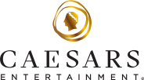
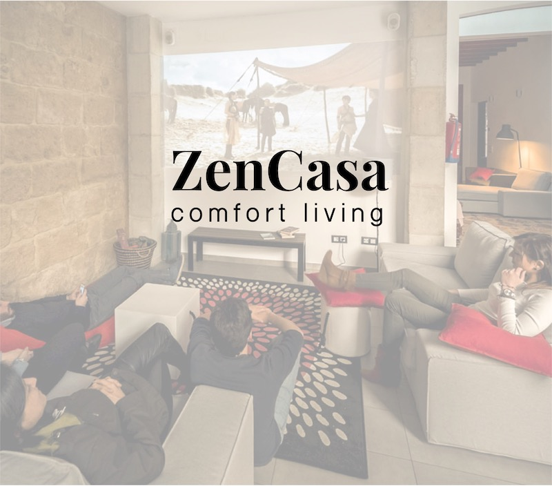

¥14.2MProduct team cost reduction
¥14.2MProduct team cost reductionPlatform leadership · 2024–Present
Travel platform strategy
Connecting supplier integrations, internal operations, and distribution through a centralized travel platform.
View case studyPlatform leadership, enterprise delivery, and the research and prototypes that shaped my approach.
¥14.2MProduct team cost reductionPlatform leadership · 2024–Present
Connecting supplier integrations, internal operations, and distribution through a centralized travel platform.
View case study
15M+CRM users supported across the US and CanadaEnterprise & data products · 2021–2023
Replacing a licensed legacy CRM with an in-house platform across compliance, finance, and identity management.
View case studyInternal platforms & experimentation · 2018–2021
Unifying product and engineering workflows to reduce launch cycles and improve operational efficiency.
View case study
Museum experience research · 2018
Exploring how interactive technology could help museum visitors connect more deeply with art.
View case study
Transcription & research tool · 2018
Making audio and video interviews searchable through timestamped transcripts and an integrated editing experience.
View case study
Connected agriculture prototype · 2017
Exploring accessible farm data through solar-powered sensors, GSM connectivity, and actionable feedback.
View case study
Shared-living platform concept · 2018
Bringing household tasks, shared bills, communication, and property-management needs into a common place.
View case study
Messaging security prototype · 2017
A prototype exploring clearer key-change notifications and explicit verification in encrypted messaging.
View case study